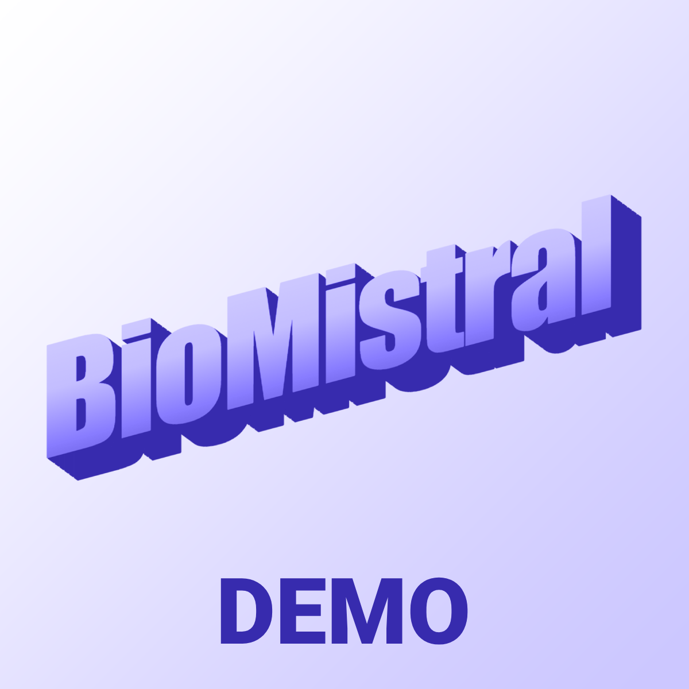
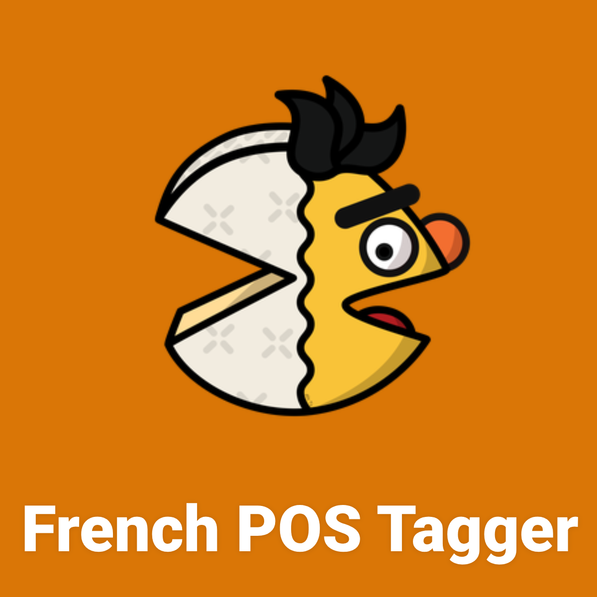
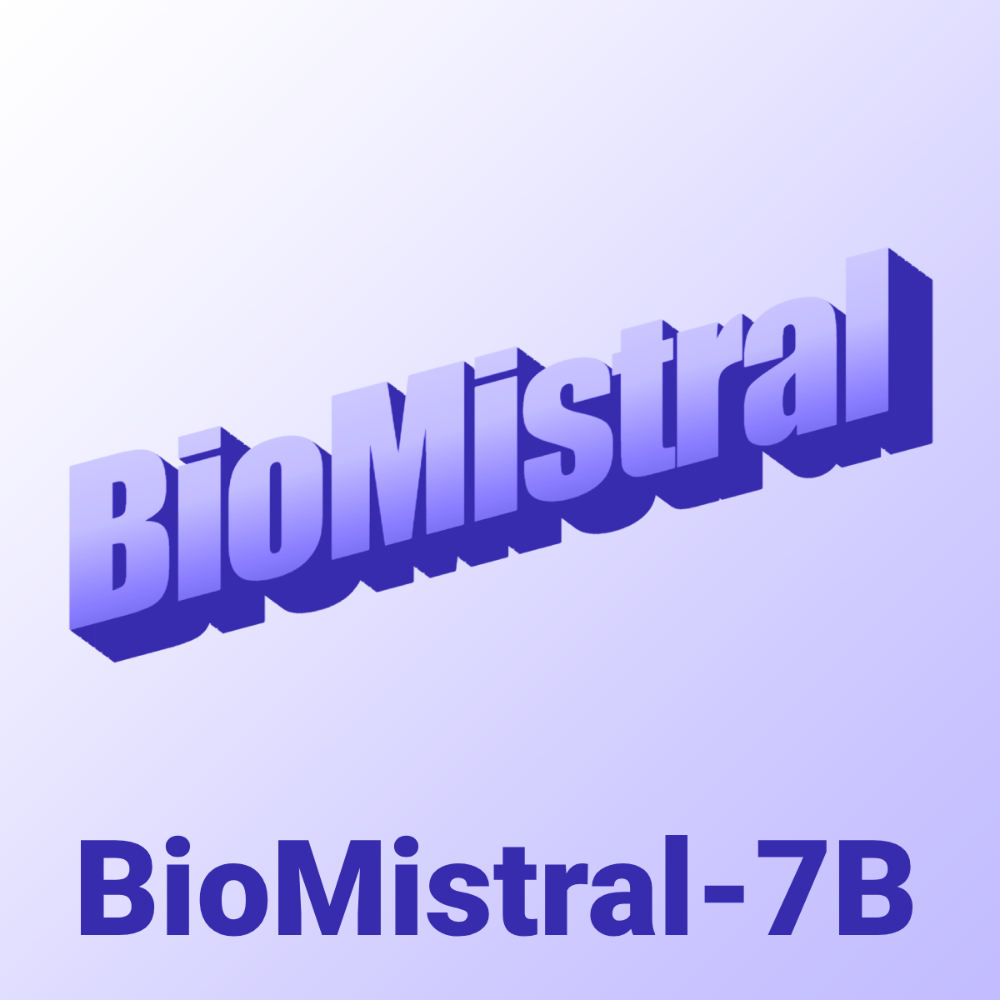
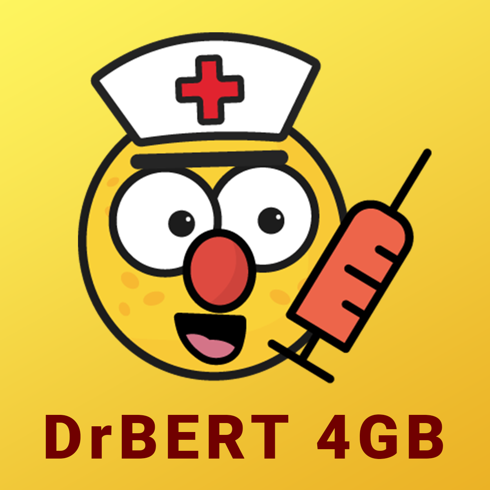
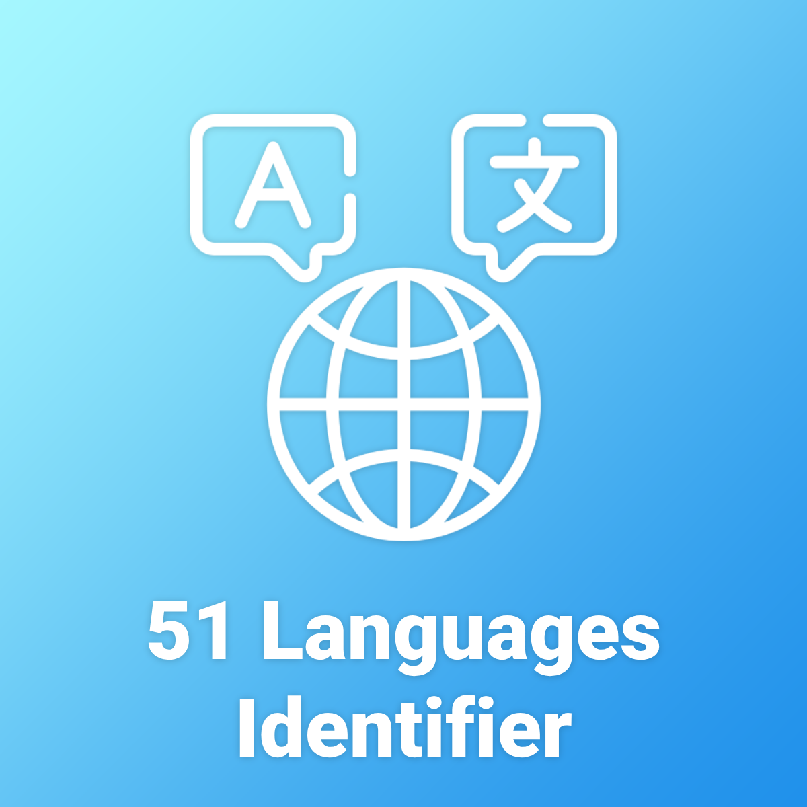

💼 I'm currently doing a PhD in Speech and Natural Language Processing (NLP) applied to the Healthcare industry at the Avignon University CS Research Lab (Laboratoire Informatique d’Avignon - LIA, France). I also spend my time as a Research Scientist at Zenidoc.
🔬 Most of my recent research are concentrated on machine learning methods and more specially on language modeling and speech recognition applied to domain specific applications in medical.
🔭 I’m currently working on integrating speech modality into textual large language models, in order to leverage vastly available textual knowledge and performing End-To-End tasks which currently necessitate using cascade systems.
Spaces on HuggingFace
|  |  |
Models on HuggingFace
|  |  |  |
Connect with me 😃

|
- Multi-modality
- Generative model and LLM
- Information retrieval
- Speech processing
-
PhD in Computer Science, 2025 (Soon)
Avignon University
-
MSc in Computer Science - Software Engineering, 2022
Avignon University
-
BSc in Computer Science - Software Engineering, 2020
Avignon University
Recent Publications
Experience
- Applied Research on AI generated lyrics detection for filtering the daily ingested tracks and automatically identifying fraudulent content, in order to deliver a high-quality service and ensure a fair remuneration for professional artists.
- Explore the capabilities of lyrics based text embeddings to guide content recommendation in production.
- Tech Stack: Docker, Python, Pytorch, Google Cloud Platform, BigQuery, Kafka, CUDA, Flask, SQL, Jira, Confluence.
- Organizer of the 2023 edition of the French NLP shared task DEFT (DÉfi Fouille de Textes) in Paris. The shared task was articulated around our medical multiple-choice question answering dataset FrenchMedMCQA and brought together 6 academic and industrial teams for a total of 34 participants.
- Major success of the release of our open-source models (up to more than >110k downloads/month, multiple industry applications).
- Presented my research in person to the French National Research Agency (my research is core to the MALADES project.
- My work was featured in multiple news articles and a wide range of podcasts, I gave 3 interviews (CNRS, l’usine digitale and ActuIA).
- Teachings: Parallel Programming for MSc 1st year students (c, c++, cuda), End-to-end Software Development for MSc 1st year students (python, flask, dart, flutter, JavaScript, nodejs, tesseract-ocr) and Web & Database Architecture for BSc 2nd year students (php, javascript, jQuery, css).
- De-identification of electronic health record using deep neural network
- Automatic Named Entity Recognition (NER) for medical records structuration and posologic entities extraction
- Recommendation system for ICD-10 and CCAM codification based on the patient’s medical record (operative report, anesthesia report)
- Introducing Part-of-speech tagging into an E2E ASR via a dual decoding to reduce semantic and grammatical errors in medical transcriptions.
- Collect industry partners needs and study the technical feasibility of projects
- Manage the technical deployment of solutions developed in academia
- Promote state-of-the-art technologies and find out new applications
- Transfer of technical knowledge to technical teams
- Supervise annotations phases for named-entity-recognition, part-of-speech tagging and documents classification
- Manage in-house technological benchmarking comparison
Recent Posts
Projects
From scratch implementation of a desktop version of a map browser such as Google Maps, coded in Java using canvas rendering. On top of it, I implemented a A-Star variant to optimize user trip planning by considering multi-modality (bike, foot, car, real-time bus of Nantes metropole) and respectfull of the regulation (one-way, ...).